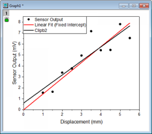

FAQ-805 Wie vergleiche ich die Kurven vor und nach der Neuberechnung?
Letztes Update: 09.12.2015
Origin 2016 SR1 unterstützt das Kopieren und Einfügen von Zeichnungen in das Diagrammfenster. Anwender haben hierdurch die Möglichkeit, die Kurven schnell vor und nach der Neuberechnung zu vergleichen.
Zum Beispiel:
- Es wird eine lineare Anpassung für das Punktdiagramm durchgeführt. --> Die angepasste Kurve (rote Linie) wird erstellt.
- Klicken Sie auf die angepasste Kurve. Drücken Sie Strg + C, um sie zu kopieren.
- Drücken Sie Strg + V, um die Linie in dem gleichen Diagramm einzufügen --> Eine schwarze Linie, Clipb2, wird eingefügt.
- Klicken Sie auf das grüne Schloss und wählen Parameter ändern im Kontextmenü.
- Legen Sie in dem geöffneten Dialog den festen Schnittpunkt mit der Y-Achse bei 0 fest.
- Jetzt können Anwender angepasste Kurven visuell vergleichen für feste Schnittpunkt mit der Y-Achse und nicht festgelegte Schnittpunkte.
- 
Schlüsselwörter:neu berechnen, Kurven vergleichen, Parameter ändern